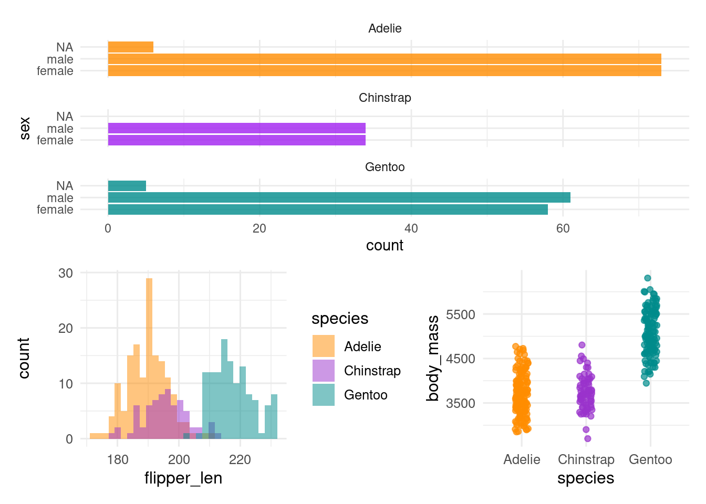
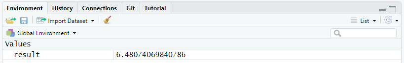
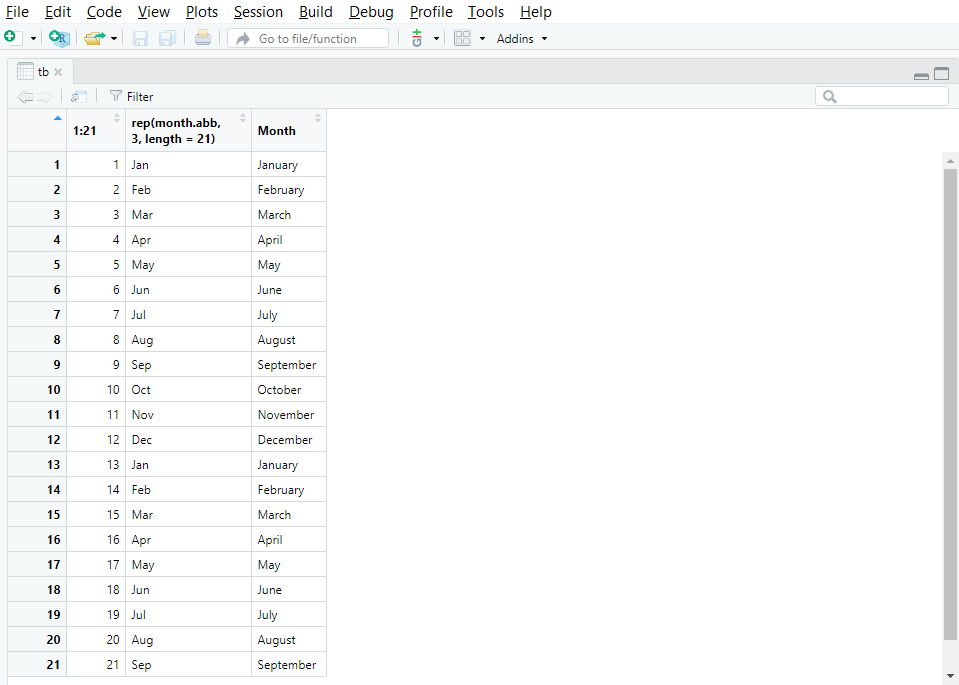

8 Objects and names
Using R as a calculator is fine, but to get very far we need to store the results from a calculation so we can use it in another calculation.
8.1 Storing data in objects
R uses objects to store data in memory. Storing data in an object is referred to as “assigning data”. There are different types of data and objects; we will talk much more about them further below. For now, let’s see why one should assign data to objects, and how to do it.
8.1.1 Why assigning data?
Putting data into named objects allows you to:
- store massive amounts of data and/or code for later reuse in calculations, analysis, plots and figures,
- divide your code into separate steps, each of which is clearly identifiable by name and thus reusable,
- simplify your code by referring to previous calculations or plots.
Let’s take a look at the following figure. It is made of 3 plots, each of them based on different variables taken from a single data set:
Believe it or not, but the code that builds this figure is as simple as this:
plot1 / (plot2 + plot3)In fact, everything that R needed in order to make the figure had been previously stored in the objects plot1, plot2 and plot3.
The clear benefit of assigning data into the above-mentioned objects is that it simplified a lot the code for the figure.
8.1.2 Assigning data to an object
To assign data to an object, type first the name you want to give it followed by the operator <- and the data to store. In the following example, we will assign the result of the operation sqrt(42) in memory to the object named result:
result <- sqrt(42)At once, the object result and its associated value show up in the Environment tab of RStudio.

From now on, you can display the content of result simply by typing its name:
result[1] 6.480741You can also reuse the object for other operations:
result * 3[1] 19.44222result * result[1] 428.1.3 Modifying object content
To modify the content of an object, you simply have to assign new data to it. Here we modify the object result:
result <- exp(42)The content of result is automatically modify, as shown in the Environment tab.

Note that the previous content of result is lost as soon as the new data is assigned. To restore the original value, you will have to go back to your script and rerun the original command that assigned the square root of 42 to result. This is one of the many reasons why you should always work with a script and annotate it: it is your life-line in case you make a mistake, lose objects, modify data elements, etc.
8.1.4 Naming objects
“What’s in a name? That which we call a xx3
By any other name would smell as sweet;”
– not quite Romeo and Juliet
There are only two hard things in Computer Science:
cache invalidation and naming things.
– Phil Karlton
Naming an object sounds quite easy if you are creative, but there is a set of rules to respect:
- names must start with a letter (lower or upper case) or a dot
., nothing else! - names may include letters (lower and/or upper case), numbers, underscores
_and dots. - you cannot use reserved names, i.e. names of existing functions or words already used in R (
TRUE,FALSE,break,function,if,for,NA,function, see the complete list by running?Reservedin the console)
Beside these rules, you may find the following recommendations useful:
- be consistent and use a word convention when writing names, such as
snake_casewhere words are written in lowercase and separated using an underscore symbol_ - give your object a meaningful name such as
norwegian_seabirds,alpine_species_vestland, etc - avoid names which meaning may change with time, such as
new_dataset,modified_dataset,last_year_data, etc - avoid very long names
- remember R is case-sensitive
- have a look at the tidyverse style guide
NoteExercise
We have prepared a learnr-tutorial that further describes the rules for naming objects, and gives you a chance to test how well you have understood. This tutorial is in the biostats.tutorials package.
The tutorial is called Naming objects. Simply click on the button Start Tutorial > to the right to start it.
See Section 5.6.3 for how to install biostats.tutorials and run the tutorials.
8.1.5 Viewing object content
As introduced in Section 2.3.5.1, the Environment tab of RStudio lists all the objects stored in memory in a given project. This list comes with a quick summary of both the structure and the content of the objects.
The function View() applied to any object opens a new tab which displays the whole object in the form of a table. Figure 8.1 shows a screenshot of the tab that appears after running View() on a large object called tb.
View(tb)

View() opens a tab with the content of the object.
View() is particularly useful when you want to quickly check entries directly in the data set as it spares you from finding and opening the original data file on your disk via the explorer.
NoteExercise
View() the penguins dataset. Compare with what you get by printing the penguins dataset. Which do you find most useful?
8.1.6 Deleting objects
When you are done with a particularly large object that takes a lot of memory, it may be useful to get rid of it. This is done by using the function rm(). Here, we will delete result from the current environment.
rm(result)To delete several objects at the same time, use rm() and type their name separated with commas ,.
result <- exp(42)
result2 <- result^2rm(result, result2)Again, once it is done, there is only one way back: go to your script and rerun the commands that originally created result and result2.
To delete everything, you can use the broom icon in the Environment tab, but it is usually better to restart the R session.
8.2 Built-in data sets
There are many datasets and other objects built into R or R packages. If the package is loaded, they can be used by typing their name.
pi[1] 3.141593month.abb # abbreviated month names [1] "Jan" "Feb" "Mar" "Apr" "May" "Jun" "Jul" "Aug" "Sep" "Oct" "Nov" "Dec"penguins# A tibble: 344 × 8
species island bill_len bill_dep flipper_len body_mass sex year
<fct> <fct> <dbl> <dbl> <int> <int> <fct> <int>
1 Adelie Torgersen 39.1 18.7 181 3750 male 2007
2 Adelie Torgersen 39.5 17.4 186 3800 female 2007
3 Adelie Torgersen 40.3 18 195 3250 female 2007
# ℹ 341 more rowsTo make datasets in packages available you can either load the package with library() first, or use data().
sleepstudy # not available yetError: object 'sleepstudy' not founddata(lme4, package = "sleepstudy")Error in find.package(package, lib.loc, verbose = verbose): there is no package called 'sleepstudy'sleepstudy # available nowError: object 'sleepstudy' not foundContributors
- Jonathan Soulé
- Aud Halbritter
- Richard Telford